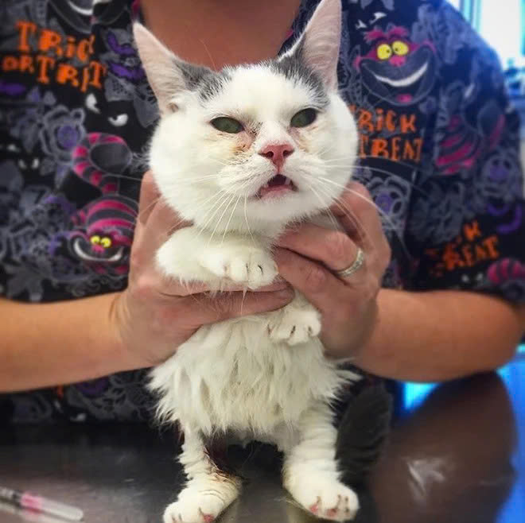
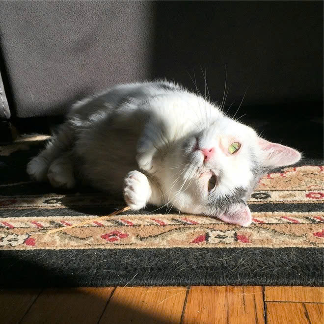

Chú mèo mù và dị tật xương trở thành ngôi sao mới nổi trên Instagram vì quá đáng yêu
Chú mèo bị dị tật
Năm 2016, em mèo cái thuộc giống Munchkin 2 tuổi tên Giselle, được chủ đưa đến trung tâm Hiệp hội phòng chống bạo lực đối với động vật tiểu bang Massachusetts (MSPCA) với lý do họ không thể đáp ứng những yêu cầu chăm sóc sức khỏe đặc biệt dành cho con thú cưng. Trước đó, người chủ này đã nhận nuôi Giselle từ một người bạn. Thời điểm được mang đến trung tâm, trông Giselle chẳng khác gì một “mớ hỗn độn”.
“Giselle bị mù, cơ thể lúc ấy của nó đầy mùi hôi của nước tiểu và phân. Khi đó, chúng tôi cũng không biết có giúp tình trạng của Giselle trở nên khá hơn được hay không” - Alyssa Krieger, quản lý Trung tâm chăm sóc và nuôi dưỡng MSPCA, đồng thời là “mẹ nuôi” tạm thời của em mèo đáng thương, chia sẻ.

Trạng thái chú mèo vô cùng tệ
Thông qua đợt kiểm tra sức khỏe, Giselle được chẩn đoán mắc bệnh nhiễm trùng phổi. Cả tai và mắt của con mèo cũng thường bị co giật, cho thấy nó có thể bị đau dây thần kinh. Đó là chưa kể kết cấu xương của Giselle có vấn đề khiến nó không thể di chuyển một cách bình thường và nhanh nhạy như những con mèo khác.
Tổ chức MSPCA cũng lo sợ rằng Giselle sẽ trở thành con mèo bị “hắt hủi” nhất nước Mỹ vì mãi vẫn chưa tìm được gia đình mới cho nó. “Giống mèo Munchkin thường rất dễ tìm được người nhận nuôi nhưng trường hợp của Giselle lại khá đặc biệt vì vấn đề sức khỏe nghiêm trọng của nó. Mỗi năm, chúng tôi giúp đỡ hơn 4.000 chú mèo đi lạc tìm được chủ mới nhưng cơ hội đó đối với Giselle có vẻ như lại rất thấp” - nhân viên trung tâm chia sẻ.
Với sự chăm sóc của Alyssa, Giselle dần dần trở nên cởi mở hơn và đã chịu bước ra khỏi “vỏ ốc” của chính mình.
“Vì Giselle bị mù nên rất khó để nó làm quen với môi trường mới. Nó ghét bị nhốt trong lồng vì cảm thấy không thoải mái và bị mất phương hướng. Thay vào đó, Giselle rất thích được xoa bụng” - “mẹ nuôi” của Giselle cho biết.
Alyssa đồng thời cũng thành lập tài khoản Instagram cho Giselle với hy vọng sẽ có ai nhận nuôi nó. Những hình ảnh được đăng tải cho thấy Giselle cũng rất hòa đồng với những con thú khác đang được nuôi dưỡng tại trung tâm.
Không lâu sau đó, Giselle trở thành ngôi sao Instagram thu hút nhiều sự quan tâm của cộng đồng mạng. Một ngày đẹp trời, trung tâm MSPCA nhận được hơn 3.000 bức thư điện tử bày tỏ mong muốn được nhận nuôi em mèo đáng yêu này. Alyssa cũng cân nhắc để tìm ra người chủ phù hợp bởi không phải ai cũng nhận thức được rằng chăm sóc cho Giselle là công việc không hề dễ dàng.

Tài khoản Instagram của Giselle thu hút gần 34 nghìn lượt theo dõi.
Cuối cùng, Giselle cũng về với người chủ mới là chị Holly và được đổi tên thành Potato vì trông nó nhỏ nhắn như củ khoai tây. Tháng 2 năm ngoái, Potato trải qua ca phẫu thuật loại bỏ 70% đại tràng để cải thiện tình trạng sức khỏe và không cần uống thuốc điều trị mỗi ngày. Sức khỏe của Potato hồi phục một cách nhanh chóng và nay đã ổn định hoàn toàn.
Thời gian đầu về với chủ mới, Potato chưa quen và không thích được ẵm bồng. Nhưng giờ đây, nó lại nằm ngoan ngoãn trong lòng của Holly và đùa giỡn với những “người bạn” khác trong nhà
Với sự chăm sóc của Alyssa, Giselle dần dần trở nên cởi mở hơn và đã chịu bước ra khỏi “vỏ ốc” của chính mình.
